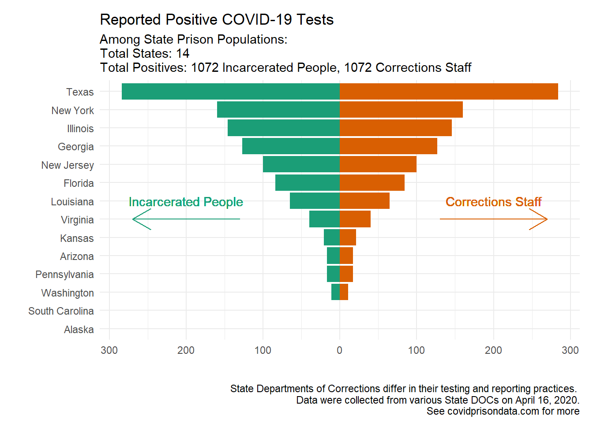

A week ago, a team of data scientists, criminologists, and law professors began a concerted effort to gather data to learn more about how incarcerated people and correctional staff are being affected by Covid-19. High-quality data are critical to provide transparency so advocates, experts, and government officials can be informed by the best information available. Here, data produced by states is integrated into one resource to facilitate access, a comparative perspective, and analysis. This is a work and progress and we appreciate feedback and suggestions.
While we make every effort to ensure that the information scraped is accurate and updated everyday, there are the following caveats. First, not all state DOC’s update their information everyday or even every business day. As a result, while the scraper for data pertaining to Covid-19 is run daily, the data retrieved by the scraper may not reflect daily changes. While we make every effort to ensure that states who do not update their Covid-19 data daily are clearly marked, this all ultimately depends on the frequency that a state’s department of correction updates their data.
